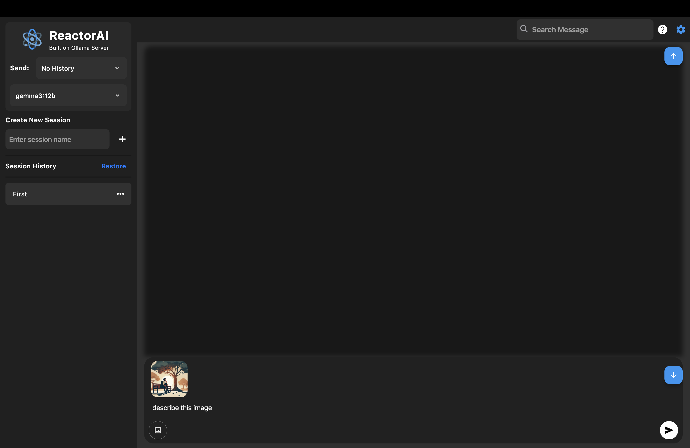

Introduction
ReactorAI is an independent chatbot client designed specifically to integrate seamlessly with Ollama, an open-source AI model server. It provides a user-friendly, modern interface tailored for macOS, allowing you to easily interact with AI models hosted locally or remotely.
Important Note: To use ReactorAI, you must have the Ollama server installed either locally on your machine or have access to a remote Ollama instance. The app includes detailed instructions for quick and easy setup.
Key Features
- Local and Remote Connectivity: Smoothly connect to AI models hosted on your computer or accessed remotely.
- Efficient Chat Management: Organize, revisit, and manage your chat history effortlessly with an intuitive session management system.
- Search Conversations: Quickly find information within any conversation session.
- Backup and Restore: Safeguard your conversations by easily backing up and restoring selected sessions.
- Privacy and Security: Benefit from secure interactions through local processing options.
- Flexible Model Selection: Switch seamlessly between multiple Ollama AI models.
- Session Instructions: Use custom system prompts to guide AI behavior per session.
Current Limitations
ReactorAI is independently developed and is not affiliated with the creators of the Ollama server. It aims to enhance your experience by providing intuitive and streamlined access to powerful AI capabilities.
Interface Screenshots
Home Screen
Chat Interface

Getting Started
1. Install Ollama
Download and install the Ollama server from its official repository or website. Follow platform-specific instructions to get it running locally.
2. Download ReactorAI
Download the latest release of the ReactorAI macOS app from the official GitHub releases page or your preferred distribution platform.
3. Run the App
Open the ReactorAI app. It should start and present you with the interface shown in the screenshots above.
4. Connect to Model
In the settings or model dropdown, enter the URL of your local or remote Ollama server and choose a model to begin chatting.
5. Start Chatting
You're ready to go! Start a new session, enter your prompt, and begin your conversation with the AI model of your choice.